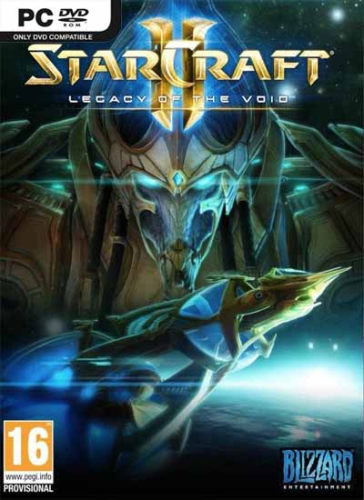

|  |
StarCraft II: The Complete CollectionPESO 33.6GB GENEROS Estrategia | Tiempo real | Ciencia Ficcion PLATAFORMA PC DISTRIBUIDOR Activision Blizzard DESARROLLADOR Blizzard LANZAMIENTO 12 de Marzo del 2013 |
StarCraft II: Wings of Liberty, de Blizzard Entertainment. Heart of the Swarm continúa la épica historia de Wings of Liberty con una campaña totalmente nueva que se centra en Kerrigan, la antigua Reina de Espadas. En la campaña de Heart of the Swarm, los jugadores podrán hacer evolucionar sus enjambres con unidades y habilidades únicas exclusivas de la campaña. La evolución tendrá lugar de una forma natural; perfectamente adaptada al espíritu zerg de la expansión. Kerrigan también jugará un papel importante como poderosa heroína en cada una de las batallas.